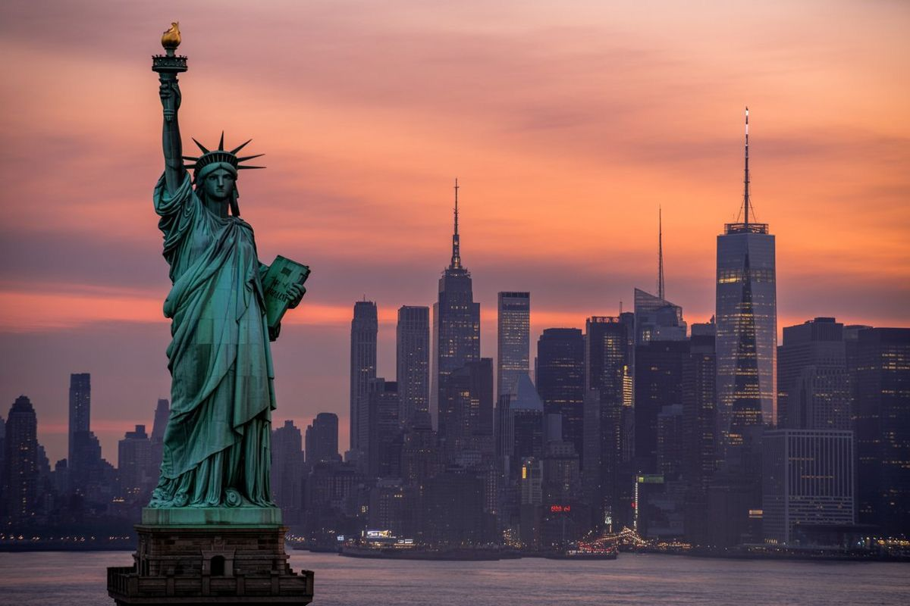

Nova York
Minha Viagem dos Sonhos-Giovanna Ramos


Sobre o lugar
Nova York é uma cidade vibrante, cheia de vida e cultura. Conhecida como “a cidade que nunca dorme”, encanta com sua diversidade, arquitetura impressionante e infinitas possibilidades. É um destino que combina o moderno e o clássico como nenhum outro lugar no mundo.

Por que escolhi esse lugar?
Sempre sonhei em conhecer Nova York desde que assisti aos filmes e vi fotos incríveis da cidade. É um lugar que inspira, com energia única, cheia de oportunidades e experiências inesquecíveis. Quero viver de perto tudo o que sempre admirei!

Pontos turísticos
- Estátua da Liberdade
- Central Park
- Times Square
- Empire State Building
- Ponte do Brooklyn